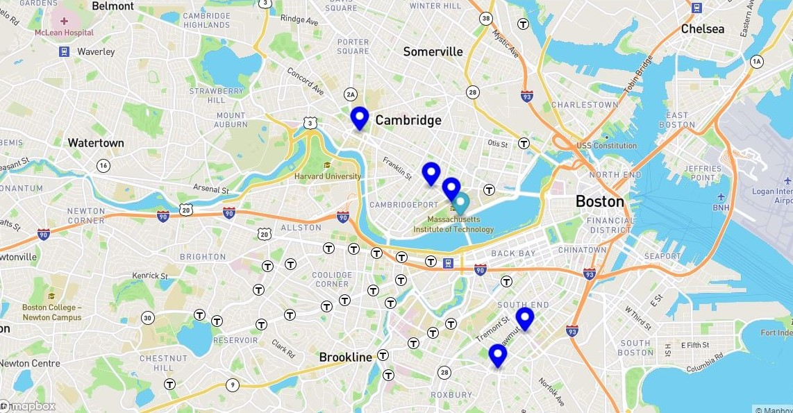

Real Time Bus Tracker Exercise

This exercise gives you a real time look of where the bus is located between the MIT and Harvard Campus in Boston.
GitHub Respository
Eyes Exercise

This exercise creates an eye on the screen that follows your cursor as you move it.
GitHub Repository
PacMen Exercise

This exercise allows you to create multiple PacMen and start the movement of them bouncing back and forth your computer screen.
GitHub Repository
How to Create a Website

Want to learn the basics of creating a website on GitHub? Click below for step by step instructions!
Instructions